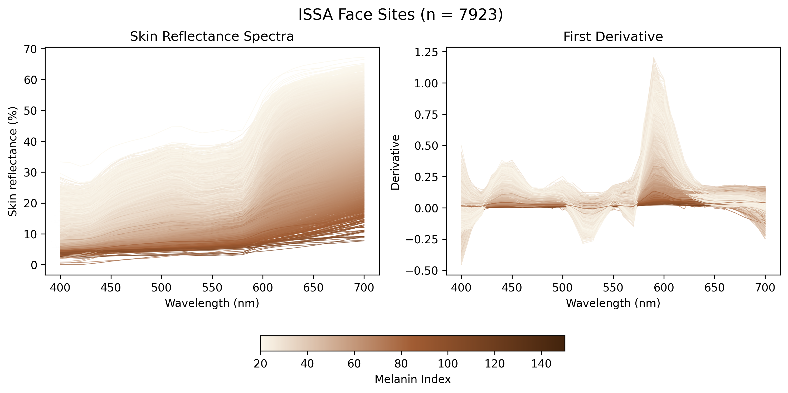
Bayesian Varying Coefficient Model (BVCM) for Skin Reflectance Spectra
We implement a Bayesian Varying Coefficient Model (BVCM) to analyze and generate realistic human skin reflectance spectra based on the ISSA dataset.
Key Features:
- Models skin reflectance as a function of melanin index and erythema index
- Uses Gaussian Processes for smooth, wavelength-dependent coefficient functions
- Captures subject-specific variations through random effect GPs
- Enables synthetic spectra generation with biologically plausible characteristics
- Provides a two-stage validation filter for quality control of simra Validation Filter
1 Model specification
1.1 Mathematical formulation
Assume we have skin reflectance spectra \(Y_i(\lambda) \in [0,1]\) for individuals \(i = 1, \ldots, N\) measured at wavelengths \(\lambda \in [400, 700]\) nm. We apply a logit transformation on the skin reflectance to ensure the transformed values are in the range \((-\infty, \infty)\). The BVCM can be formulated as: \[logit(Y_i(\lambda)) = \beta_0(\lambda) + X_{MI,i} \beta_{MI}(\lambda) + X_{EI,i} \beta_{EI}(\lambda) + Z_i(\lambda) + \epsilon_i(\lambda),\] where \(\beta_0(\lambda)\) is the intercept function, \(\beta_{MI}(\lambda)\) and \(\beta_{EI}(\lambda)\) are the varying coefficient functions for melanin and erythema variables, respectively. \(Z_i(\lambda)\) represents subject-specific deviations modeled as a Gaussian process, and \(\epsilon_i(\lambda)\) is the measurement error.
The melanin and hemoglobin variables are calculated as:
- Melanin index: \[X_{MI,i} = 100 \times \log_{10}\left(\frac{1}{R_{680,i}}\right),\] where \(R_{680,i}\) is reflectance at 680nm for individual \(i\).
- Erythema index: \[X_{EI,i} = 100 \times \log_{10}\left(\frac{R_{680,i}}{R_{560,i}}\right).\]
1.2 Spline basis representation and Hilbert space GP priors
We represent the intercept and coefficient functions using cubic P-spline basis functions. Each function is expressed as: \[\beta_k(\lambda) = \sum_{j=1}^{J} b_{k,j} B_j(\lambda),\] where \(B_j(\lambda)\) are the spline basis functions and \(b_{k,j}\) are the coefficients. Here we set \(J=20\).
We employ the Hilbert Space Gaussian Process (HSGP) approximation to model the random effect functions \(Z_i(\lambda)\), allowing efficient computation while capturing smooth variations. We approximate the GP \(Z(\lambda)\) using a finite set of basis functions derived from the eigenfunctions of the covariance kernel: \[Z(\lambda) \approx \sum_{m=1}^{M} w_m \phi_m(\lambda),\] where \(\phi_m(\lambda)\) are the basis functions and \(w_m\) are the weights drawn from a Gaussian distribution. For a stationary kernel (like Matern) in 1D, the basis functions are sine waves determined by the domain size, and the variance of the weights is determined by the Spectral Density of the kernel. Specifically, \[Z(\lambda) \approx \sum_{m=1}^M \frac{1}{\sqrt{L}} \sin \left(\frac{m\pi(\lambda+L)}{2L}\right) \cdot \sqrt{S(\omega_m)} \cdot w_m,\] where \(L\) is half the domain length, \(S(\omega_m)\) is the spectral density at frequency \(\omega_m = \frac{m\pi}{2L}\), and \(w_m \sim \mathcal{N}(0,1)\). Here we set \(M=10\).
1.3 Prior specifications
We define the following prior distributions for the model parameters:
- Random walk priors for spline coefficients:
- \[\Delta^2 b_{k,j} = b_{k,j} - 2b_{k,j-1} + b_{k,j-2} \sim N(0, \tau_{\beta}^2),\] where \(\tau_{\beta}=1\) controls the smoothness of the coefficient functions.
- Gaussian Process prior for subject-specific deviations:
- \[Z_i(\lambda) \sim GP(0, K_{Z}(\lambda, \lambda')),\] where \(K_{Z}(\lambda, \lambda')\) is a Matern52 covariance function with length \(\rho_{Z}\) and scale \(\sigma_{Z}\).
- \[\rho_{Z} \sim Gamma(50, 1), \quad \sigma_{Z} \sim HalfNormal(0.5).\]
- Normal prior for measurement error:
- \[\epsilon_i(\lambda) \sim N(0, \sigma_{\epsilon}^2),\] where \(\sigma_{\epsilon}^2\) is the variance of the measurement error.
- \[\sigma_{\epsilon}^2 \sim IG(1, 1).\]
2 Exploratory analysis on ISSA face sites
2.1 Skin reflectance and its first derivative
2.2 Eumelanin human skin colour scale
ISSA Face Sites Eumelanin Class Summary Table:
| Eumelanin Class | EML (<25) | EMIL (25-49) | EMI (50-74) | EMIH (75-99) | EMH (>=100) |
|---|---|---|---|---|---|
| Site | |||||
| Cheek | 216 | 1978 | 227 | 50 | 4 |
| Cheek Bone | 24 | 186 | 18 | 0 | 0 |
| Chin | 271 | 1507 | 211 | 36 | 5 |
| Ear lobe | 9 | 394 | 57 | 12 | 3 |
| Forehead | 77 | 1772 | 190 | 30 | 3 |
| Nose tip | 29 | 582 | 31 | 1 | 0 |
| Total | 626 | 6419 | 734 | 129 | 15 |
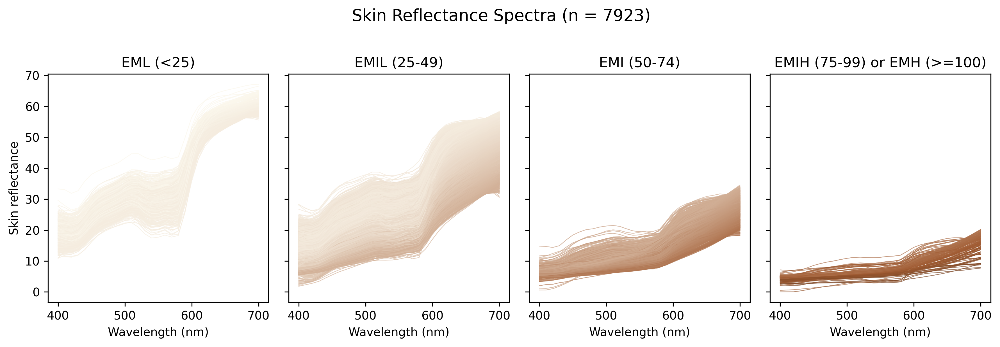
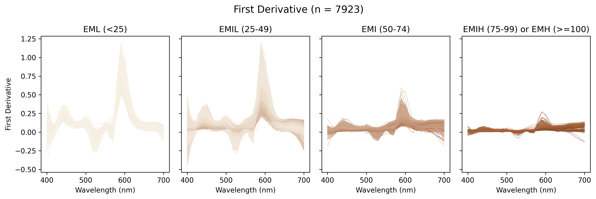
2.3 Chromophore distribution modeling
The relationship between melanin index and erythema index is shown as:
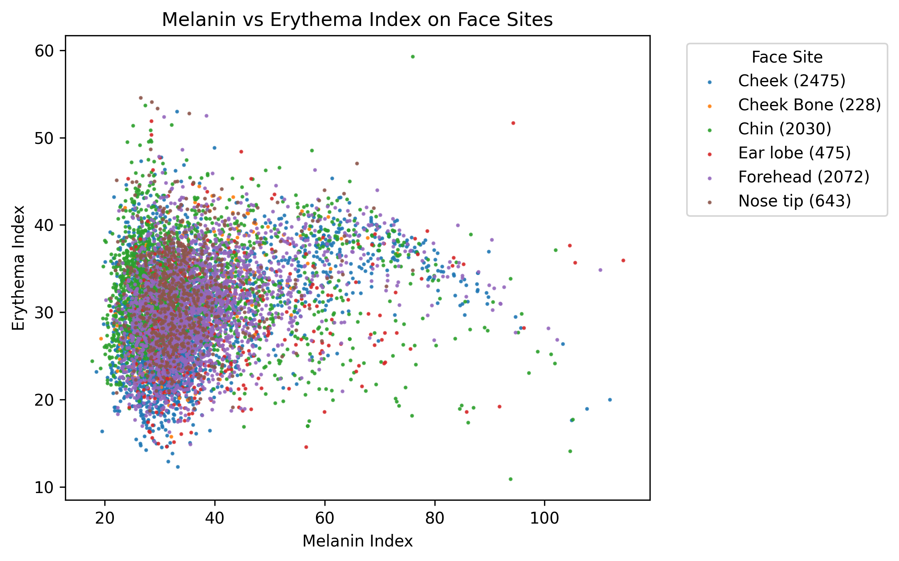
We apply a Gaussian mixture model with 5 components to approximate the distribution of melanin and erythema indices in the population. This allows us to identify the realistic combinations of these chromophore indices.
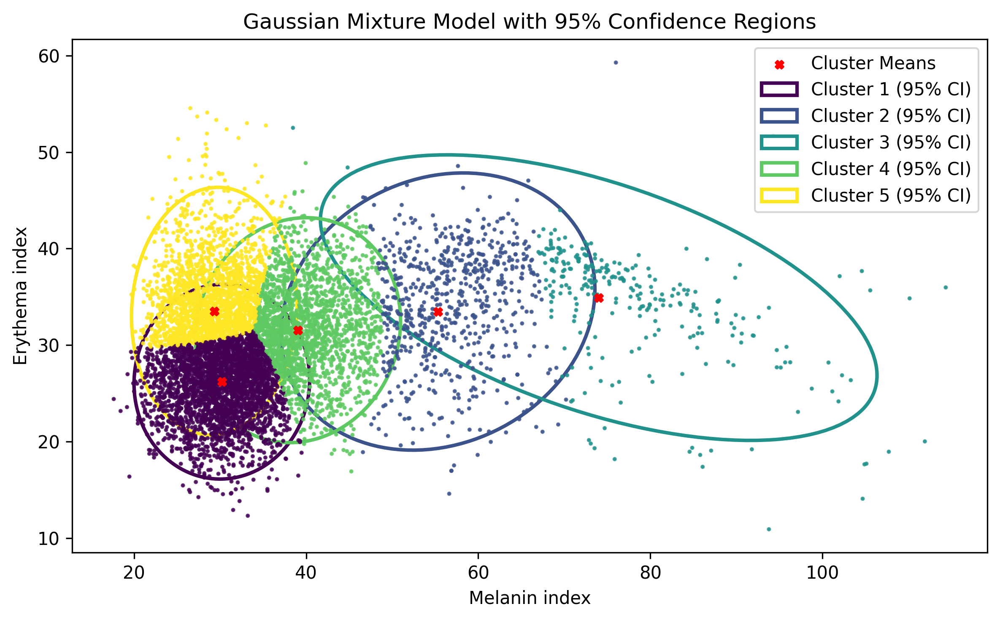
3 Posterior inference
We perform posterior inference using a Hybrid Gibbs sampler. The model is fitted to the ISSA face skin reflectance spectra, melanin index, and erythema index data.
3.1 Preprocess data
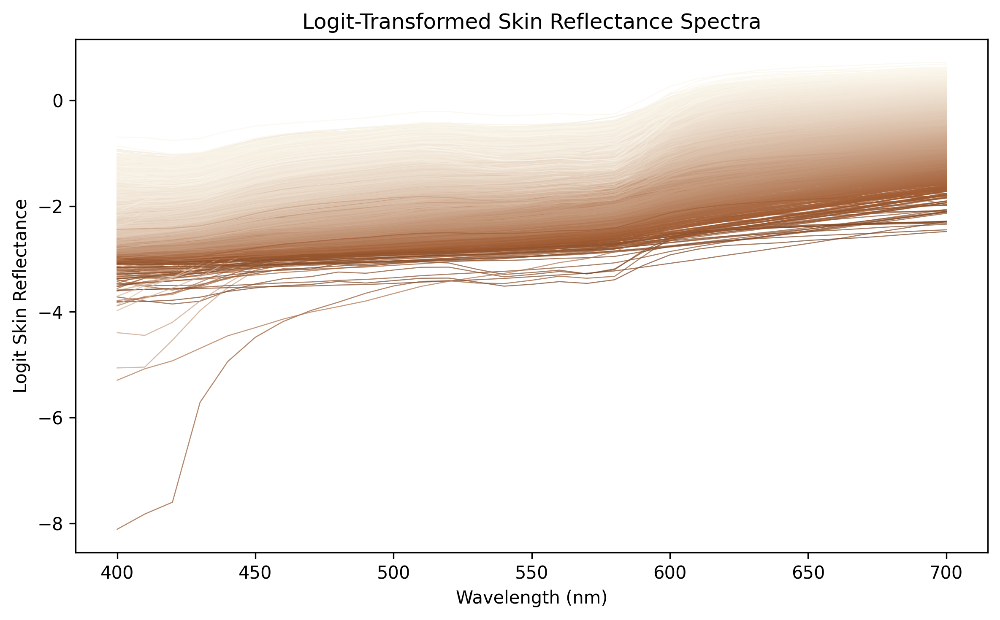
3.2 Gibbs sampler
Starting Gibbs Sampler for 10000 draws and 10000 tune steps...
Hyperparameter Acceptance Rate: 15.83%3.3 Posterior visualization
3.3.1 Coefficient function estimation
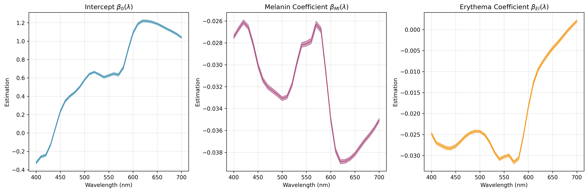
3.3.2 Predict reflectance spectra given MI and EI
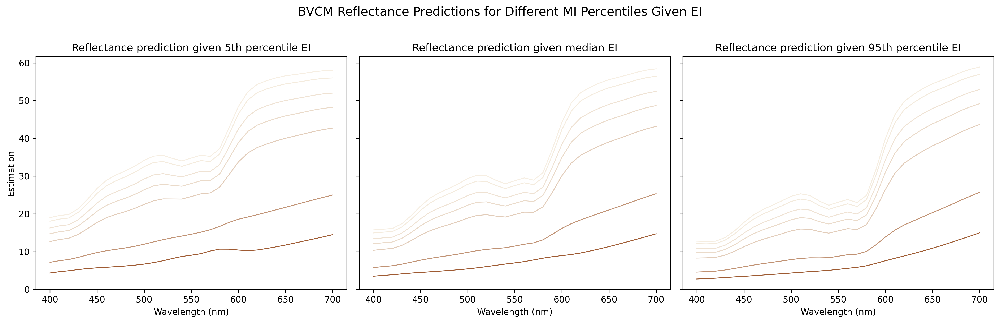
Remark: Across various levels of the erythema index, the predicted reflectance spectra exhibit a W-shape at low melanin indices and an increasing shape at high melanin indices. This finding is consistent with the shape analysis within ISSA.
3.3.3 Subject-specific deviation
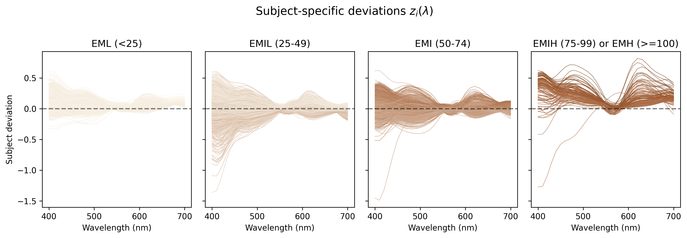
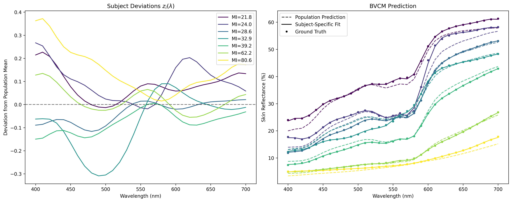
4 Model diagnostics and evaluation
4.1 Evaluation on training data
| Model | R² | RMSE (%) | MAE (%) | |
|---|---|---|---|---|
| 0 | Population-Level (Fixed Effects) | 0.965279 | 1.410466 | 1.051930 |
| 1 | Subject-Specific (Fixed + Random) | 0.999319 | 0.197521 | 0.131806 |
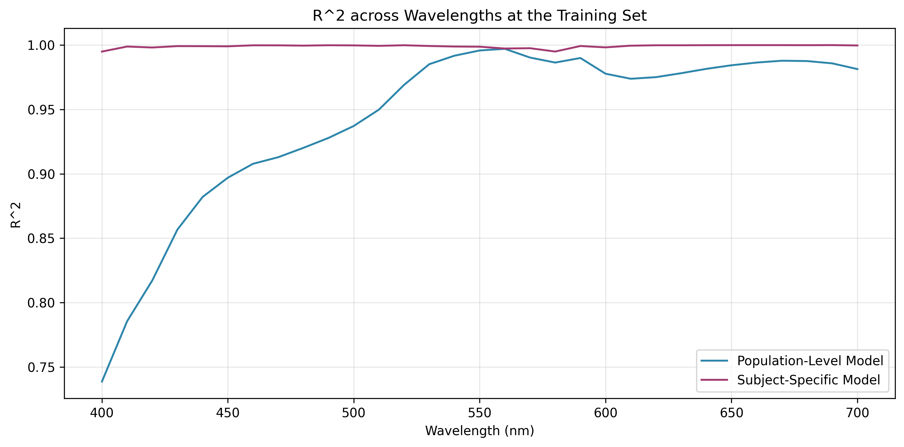
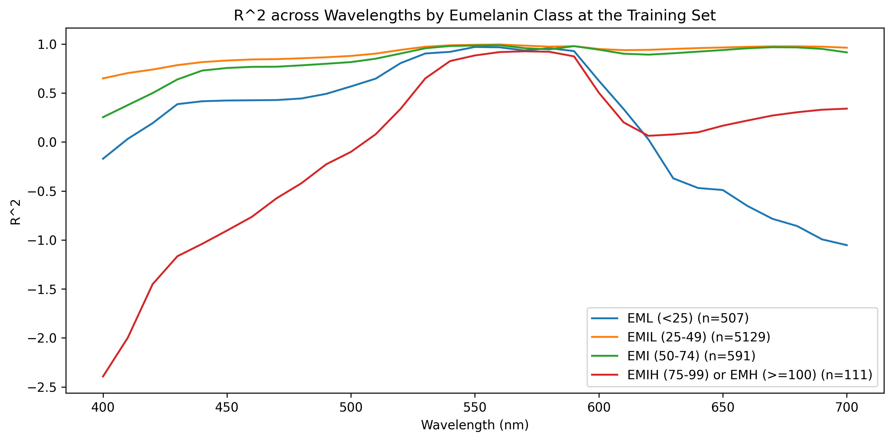
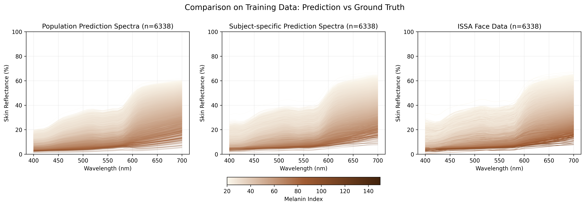
4.2 Evaluation on test data
| Model | R² | RMSE (%) | MAE (%) | |
|---|---|---|---|---|
| 0 | Population-Level (Fixed Effects) | 0.964615 | 1.427337 | 1.067989 |
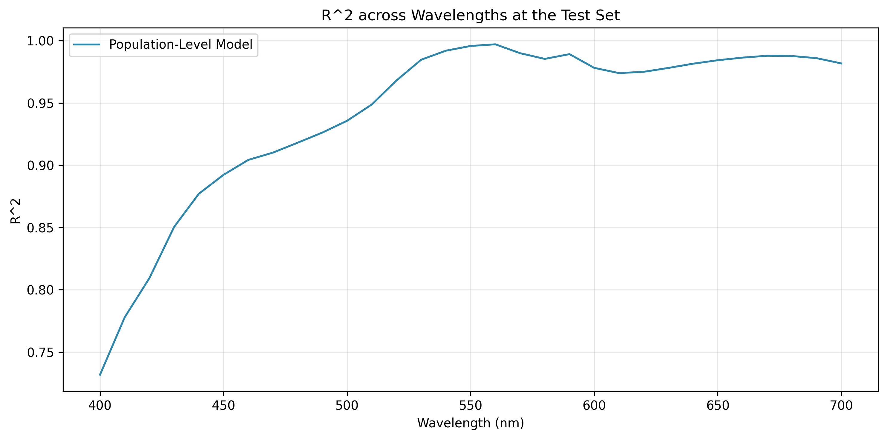
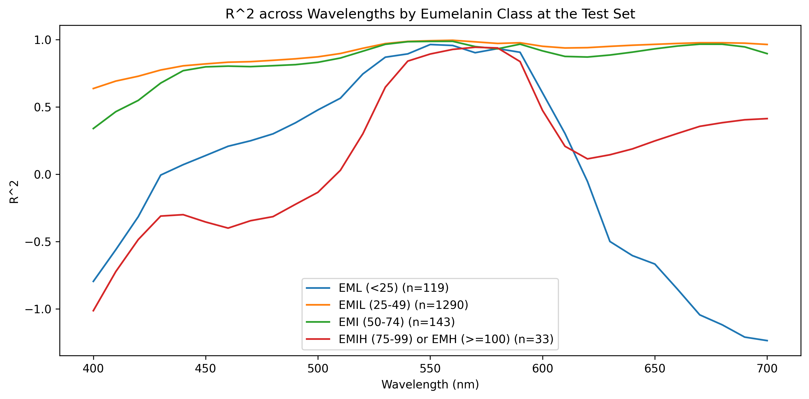
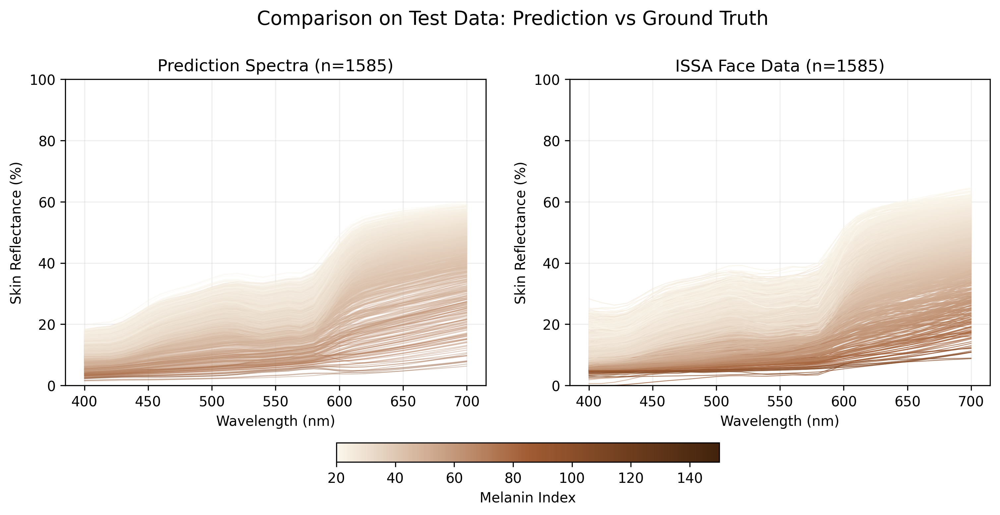
5 Synthetic spectra generation
This section demonstrates how to generate realistic synthetic skin reflectance.
Choromophore Index Sampling: Sample melanin variable (MEL) and hemoglobin variable (HEM) pairs from the fitted GMM to ensure biologically plausible combinations.
Spectral Prediction: For each sampled (MEL, HEM) pair, use the BVCM fixed effects (population-level coefficients) to predict the corresponding skin reflectance spectrum. Then add subject-specific random effects to introduce realistic individual variation.
- The new subject-specific deviation \(Z^*\) is sampled from \(p(Z^*\mid Y)=\int p(Z^*\mid Z) p(Z\mid Y) dZ=p(Z^*)\), where the last equality holds as \(Z^*\) is independent to \(Z\).
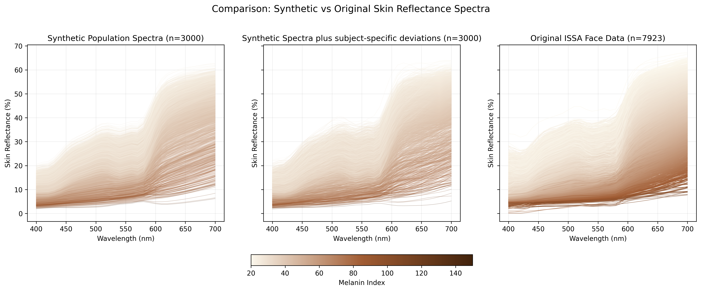
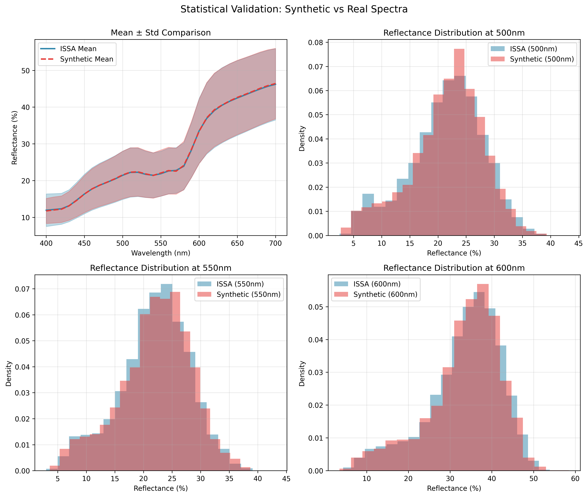
6 Skin reflectance spectrum filter
To ensure the quality and biological plausibility of simulated skin reflectance spectra, we implement a two-stage filtering approach based on the fitted GMM and BVCM model:
Chromophore Index Validation: For each candidate spectrum, compute the corresponding melanin variable (MEL) and heomoglobin variable (HEM) using the standard formulae. Reject spectra whose chromophore indices fall outside the 95% confidence regions of the fitted GMM, as these represent biologically implausible combinations of melanin and hemoglobin effects not observed in real human skin.
Spectral Plausibility Assessment: For spectra that pass Stage 1, evaluate their statistical plausibility using the BVCM model. Given the spectrum’s (MEL, HEM) pair, compute the population-level predicted spectrum from the BVCM fixed effects. Calculate the Mahalanobis distance between the candidate spectrum and the predicted spectrum, accounting for the covariance structure learned from the training data. Reject spectra whose Mahalanobis distance exceeds a predetermined threshold (e.g., the 95th percentile of distances observed in the training set), as these exhibit systematic deviations inconsistent with empirically observed skin optical properties.
This dual-stage filter ensures generated spectra are both compositionally plausible (Stage 1) and spectrally consistent with real human skin measurements (Stage 2).
6.1 Stage 1: Chromophore index validation
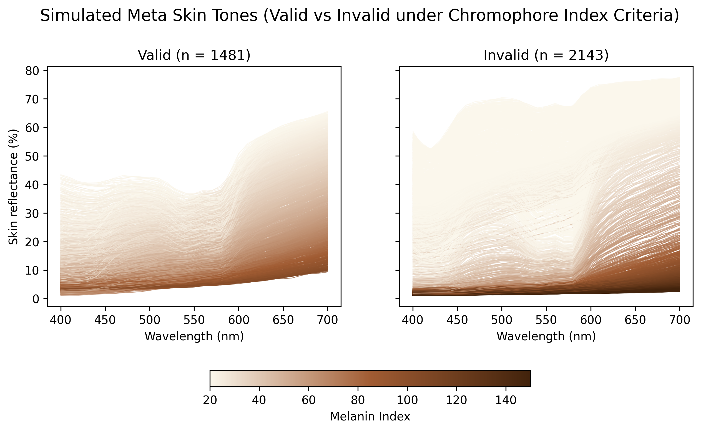
6.2 Stage 2: Spectral plausibility assessment
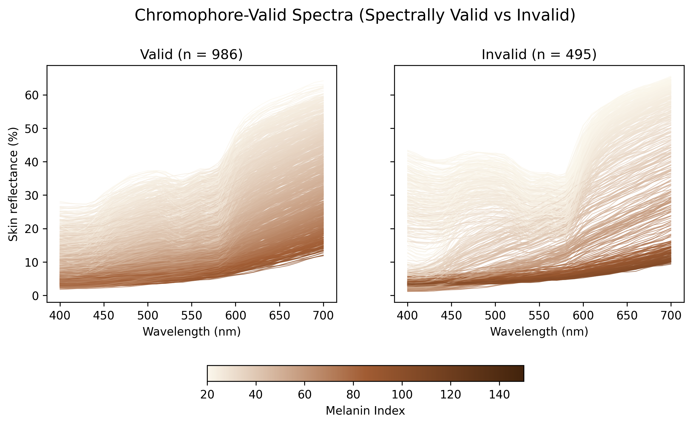
6.3 Validation results summary
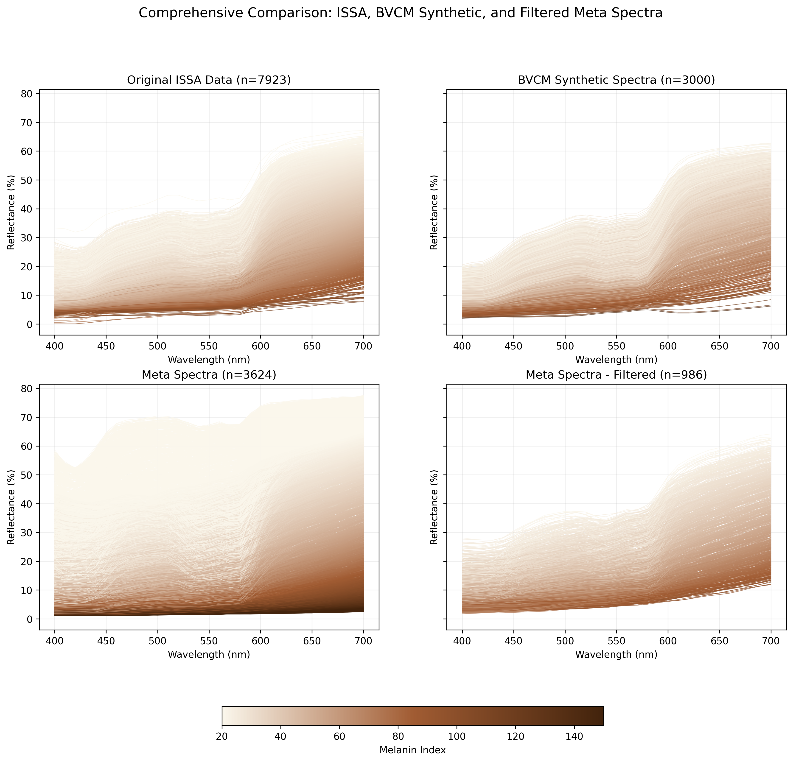
======================================================================
TWO-STAGE VALIDATION FILTER SUMMARY
======================================================================
Stage 1: Chromophore Index Validation (GMM 95% CI)
Input spectra: 3624
Valid (within GMM): 1481 (40.9%)
Invalid (outside GMM): 2143 (59.1%)
Stage 2: Spectral Plausibility Assessment (Mahalanobis Distance)
Input (from Stage 1): 1481
Threshold: 9.41 (95th percentile from training)
Valid (plausible spectra): 986 (66.6%)
Invalid (implausible spectra): 495 (33.4%)
Overall Filter Performance:
Total input: 3624
Total valid: 986 (27.2%)
Total rejected: 2638 (72.8%)
Chromophore Index Statistics (Valid Spectra):
Melanin Index: [20.37, 97.38]
Erythema Index: [16.32, 49.44]
======================================================================